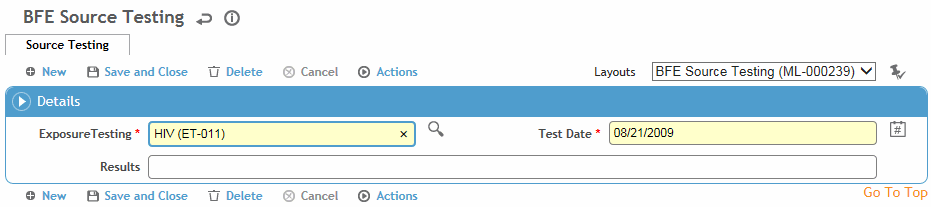

Because the source of the body fluids may not be an employee, any tests recommended cannot be captured as part of the Clinic Testing module.
Use the Source Testing tab of the Body Fluid Exposure record to identify tests performed on the source.
Click New.
Select the Exposure Test, and enter the Test Date.
Enter the Results, if known.
Click Save.
